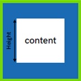
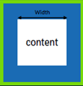
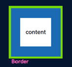
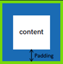

Chapter 03 — CSS (Casceding Style Sheet)
Box Model in CSS
- Height
- device-width
- Border
- Padding
- Margin

Height
div {
height: 50px;
}
By default, it sets the content area height of the element

Width
div {
width: 50px;
}
By default, it sets the content area width of the element

Border
div {
border-width: 2px;
border-style: solid / dotted / dashed;
border-color: black;
}
Shorthand
div {
border: 2px solid black;
}
Used to set an element's border

Border Radius
div {
border-radius: 10px;
border-radius: 50%
}
Used to round the corners of an element's outer border edge
Padding
div {
padding-top: 20px;
padding-right: 20px;
padding-bottom: 20px;
padding-left: 20px;
}
Shorthand
div {
padding: 20px;
padding: 10px 20px 5px 10px;
(top) (right) (bottom) (left) → clockwise
}
Used to set an element's space inside

Margin
div {
margin-top: 20px;
margin-right: 20px;
margin-bottom: 20px;
margin-left: 20px;
}
Shorthand
div {
margin: 20px;
margin: 10px 20px 5px 10px;
(top) (right) (bottom) (left) → clockwise
}
Used to set an element's space outside
Practice Set
Q1: Create a div with height & width of 100px. Set its background color to green & the border radius to 50%.
Click here to check my solutionQ2: Create the following navbar.
 Click here to check my solution
Click here to check my solution